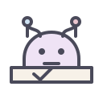
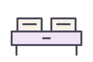
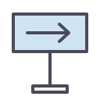
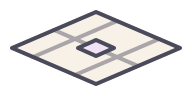
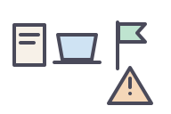

KAFKA SIGNAL preview
Catalogue, comparison, evidence, timeline, empty, loading, and error states use the same semantic contract.
Evidence
確認済み根拠、日時、状態、修正経路を表示します。
Empty
比較対象がありません。2件以上を選択してください。
Error
要確認対象データの取得に失敗しました。既存データは維持されます。
Agent World asset pack
Role / state / scene / prop のstable asset ID一覧。runtimeでは装飾扱いとし、GitHubの正準情報はDOM/data側に残します。
role.issue-working.v1

role.pull-request-review.v1
role.workflow-terminal.v1
state.working.v1
state.waiting.v1
state.done.v1
state.failed.v1
scene.desk.v1

scene.review-bench.v1
scene.terminal.v1

scene.sign.v1

scene.floor.v1

prop.small-pack.v1